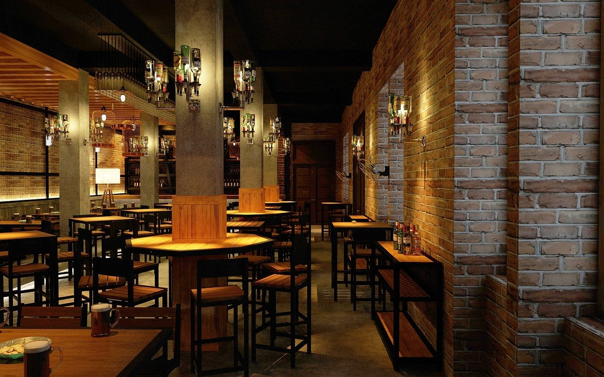

Välkommen till Restaurang matglädje. Mat är så mycket mer än att äta sig mätt. Det handlar om minnen och ögonblick som vi delar tillsammans med andra. Om smaker som förenar oss. Vår passion är att laga mat med kärlek och omsorg där smaker står i centrum. Vi utgår ifrån ekologiska råvaror i vår matlagning och strävar efter att fånga upp säsongens bästa smaker. Förutom den smakrika måltiden får du som gäst även uppleva en harmonisk atmosfär där du får möjlighet att koppla av för en stund. Varmt Välkommen!
